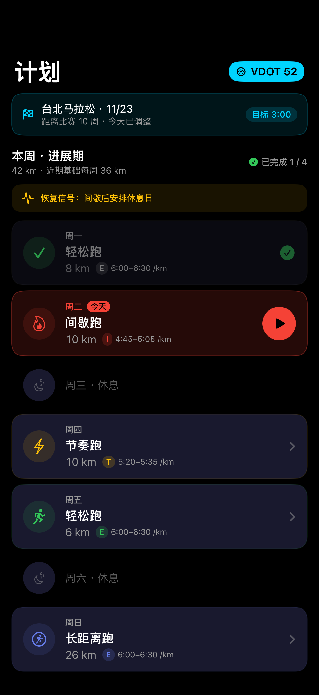
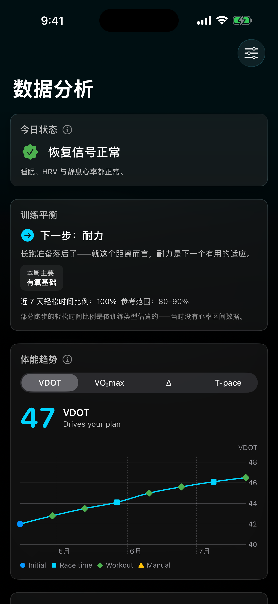
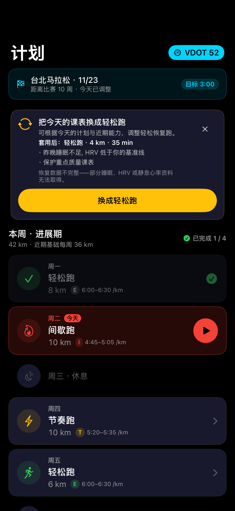
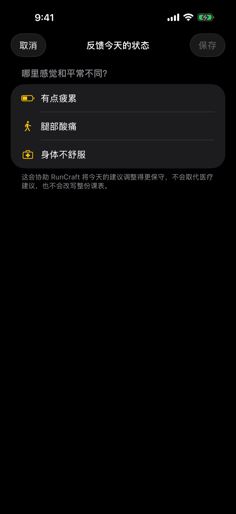
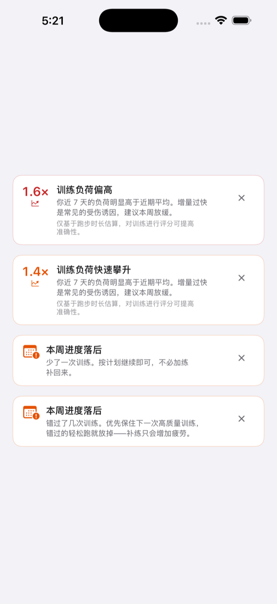
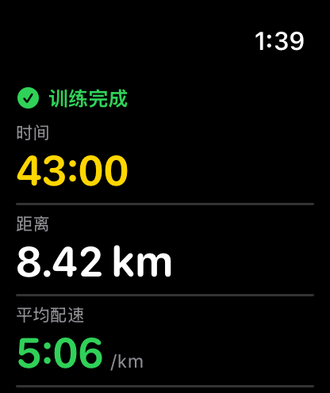

今天该练什么
一看就知道
RunCraft 把课表、完成的训练与恢复状态连接起来——让今天的安排反映现在的你，而不是几周前下载的固定模板。

问题从来不是不够努力
卡住的跑者不是懒，是在猜。以下是“猜”最常现形的地方。
每一趟都跑成差不多的“中等偏累”
轻松日不够松，恢复不了；质量课不够新鲜，跑不快。练得很勤，成绩停在原地。
网上找来的课表，不是为你写的
网上的 PDF 课表预设了别人的体能。上面的配速对你不是慢跑就是比赛，而你分不出是哪一种。
一直加量，然后祈祷不要出事
加量一路感觉良好，直到不再良好。等到开始痛，那个错误已经是三周前犯下的。
跑完了，却不知道这趟到底好不好
手表说 8 公里 44 分。它没说这是不是你今天原本该跑的那一堂课。
每一种场景，都有答案
从一次真实成绩，推出你所有的配速
输入一次比赛或测验成绩。RunCraft 把它换算成你的 VDOT 体能分数，再把这个数字变成你的每一种训练配速。“轻松”终于有了明确的数字。
- 轻松（E）、马拉松（M）、阈值（T）、间歇（I）、次数（R）五种配速
- 5K 到全马的诚实成绩预测
- 体能进步时配速跟着走，不必手动重设

今天的课表已经在那里等你
周期化课表从比赛日往回推排定。没有一个早晨要从空白开始——瞄一眼锁定屏幕，今天已经定好了。
- 小组件让今日课表一瞥即知
- 状态下滑时，恢复日自动调整
- 没有备赛？那就只跑每周固定的例行课表
不用开口，教练先注意到了
当睡眠、HRV、静息心率或近期负荷指出需要恢复，RunCraft 会直接在课表中显示一项清楚的建议，再由你决定是否应用。
- 说明提出建议的恢复信号
- 只调整今天，不随意重写整份课表
- 以页面内横幅显示，不用强制弹窗打断你

把传感器没发现的情况告诉教练
如果你异常疲累、腿部酸痛或身体不舒服，只在需要时主动反馈。这是一个安全出口，不是每天必填的健康问卷。
- 三种聚焦状态，不做医疗问诊
- 只补充今天的教练判断
- 单次反馈不会大幅改写整份课表

从走路开始，不必觉得丢脸
不是每份课表都该从 5K 起跳。走跑交替进程从你真正的起点出发，一步步带你走到连续 30 分钟。
- 走与跑交替的间歇，时间为你安排好
- 进度以“周”推进，而不是靠意志力
- 没有 Apple Watch 也行——iPhone 就能引导整趟跑
不用虚构终点，也能建立规律
选择简单的每周例行训练，或只记录跑步；之后随时可以改变方向。
- 按适合你的日子重复训练
- 不需要比赛日期或 VDOT
- 准备好时再切换到比赛训练
看懂发生了什么，以及代表什么
RunCraft 把原本要完成的训练与实际跑出的结果放在一起，而不是只留下一个完赛时间。
- GPS 路线、分段、配速与心率集中查看
- 运动自觉强度与天气补上传感器无法独自解释的背景
- 恢复、训练平衡与 VDOT 趋势告诉你下一步

有人在帮你盯着加量曲线
RunCraft 盯着你的急性／慢性训练负荷比——这周的量对照你累积出来的底子——在那一跳变成伤病之前出声。
- 每周负荷趋势，以看得懂的横幅呈现
- 加量踏进风险区时提早警告
- 80/20 检查，让轻松日诚实地轻松

编一次，就在手腕上跑
热身、主课、恢复、放松——拖进位置，一键发送到 Apple Watch。它会完全照着你写的跑。
- 热身、主课、恢复、放松区段
- 每一步可设定距离或时间目标
- 每段间歇可单独设定配速提醒

一张值得发出去的卡片
有些跑步配得上一张照片。放进你自己拍的那张，RunCraft 把数据干净地叠上去——不必再截一张杂乱的仪表板。
- 你的照片、你的跑步，数据干净地叠在上面
- 尺寸刚好给 Instagram 快拍
- 发布前先预览

跑到一半，最不该做的就是心算
专心跑，不用算
从手表开始今天的课表，剩下的交给 RunCraft：一个目标、偏离时的一下震动、还剩多少。注意力留给跑步本身。
- 实时配速目标与达标反馈
- 心率区间显示，偏离时触觉提醒
- 间歇进度——趟数、剩余距离
- 表盘复杂功能显示今日课表



iPhone 实时同步这堂课
跑到一半掏出手机，同一堂课就在上面——趟数、实时配速、心率区间——与手腕上完全同步。
- 手表的趟数进度实时镜像
- 配速、心率区间与步频一目了然
- 两台设备都能暂停或结束训练

以 VDOT 为本，不靠猜测
训练配速从 Jack Daniels 的 VDOT 出发，再用近期跑量、完成的课程与恢复状态，让课表符合你现在真正能做的事；只有传感器漏掉情况时，才由你的主动反馈补上。
有问题或建议吗？
评分与反馈
App Store 的评分与评论是最好的反馈渠道——每一条我们都会看。或随时来信 support@marstudio.app。
媒体报道
要写 RunCraft 吗？logo、屏幕截图与标准介绍都准备好了。打开媒体资料